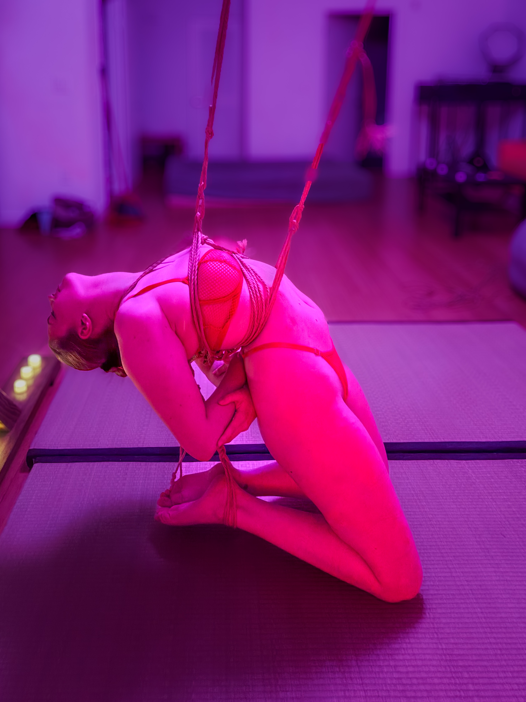
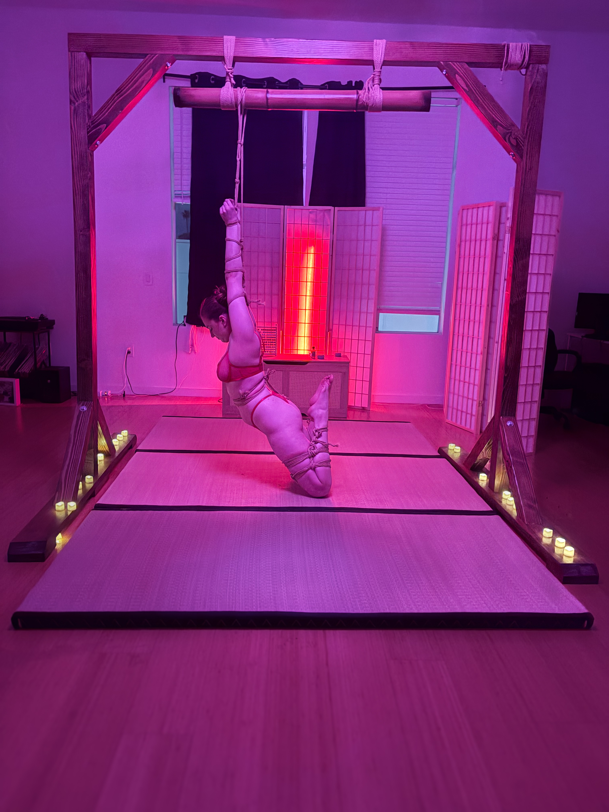
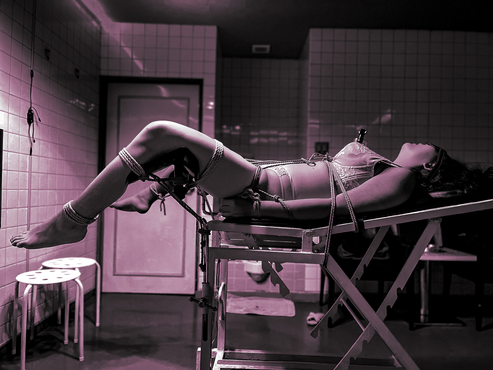

A Journal of Roper Reflections
June 12, 2026
This is a quiet space for writing about rope, embodiment, trust, pacing, and the nervous system. Less performance. More listening. Less spectacle. More capacity.


I am Professor Rope. Over the past five years, I've studied, taught, and performed rope in more than ten countries. You'll often find me at The Play LA, creating rope experiences centered on connection, trust, and surrender.



Intake Form Completing this form helps create the foundation for a thoughtful and connected experience. Before we collaborate, I like to understand your experience level, injury history, interests, desires, and boundaries. Once you've submitted the form, we can schedule a conversation to explore intentions, answer questions, and determine whether we're a good fit for a rope experience



Polyvagal theory offers a useful lens through which for us to explore surrender. It provides a vocabulary for creating experiences that feel both grounded and expansive; developing trust/safety while exploring exciting new possibilities.
How Can we Create a Container for Possibility Together?


June 12, 2026



For queries about performance, rope tastings, education, or other kinds of collaboration
Email: professorrope@gmail.com
Instagram: @profrope